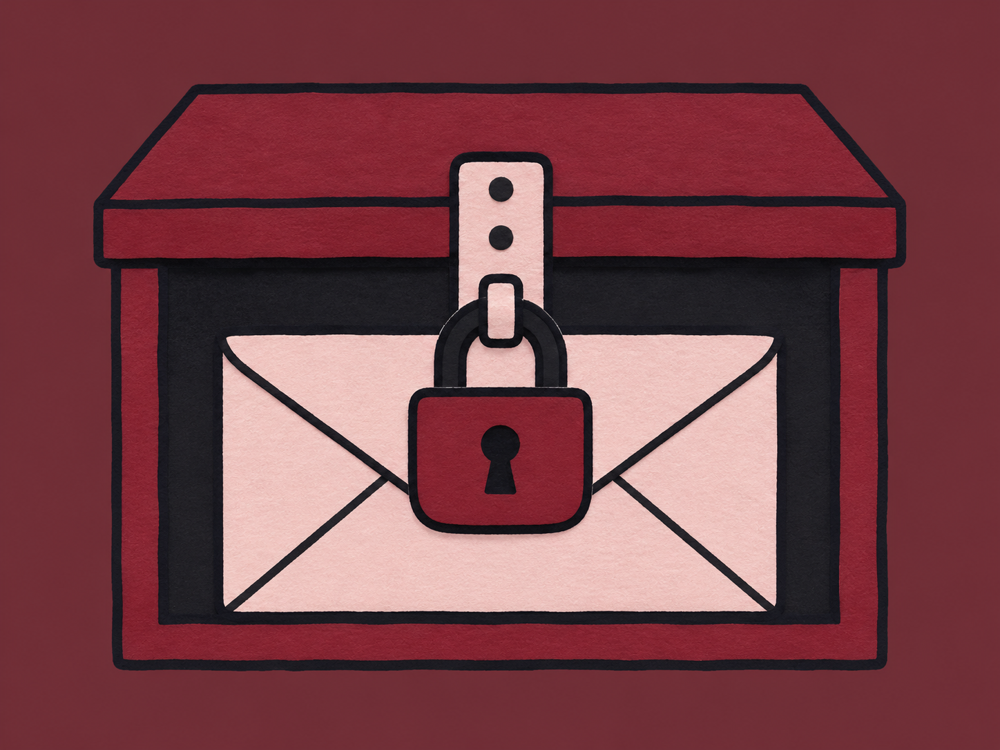
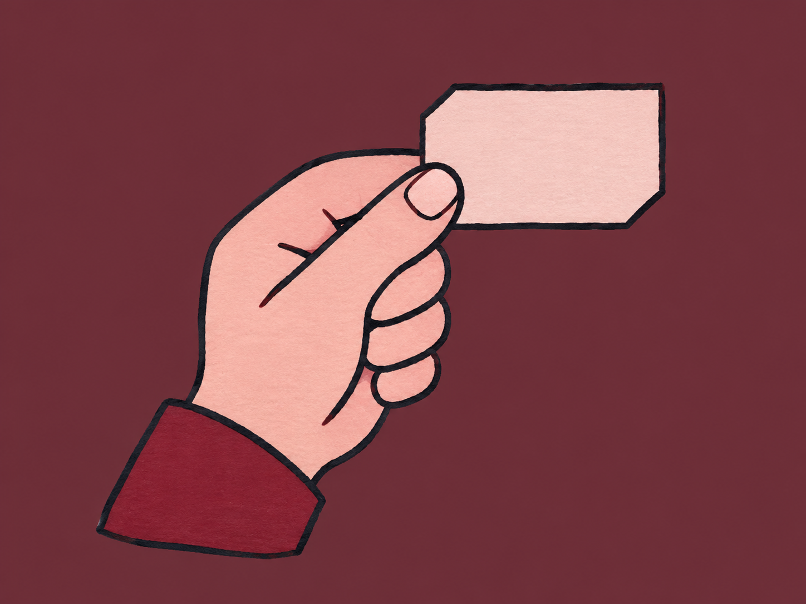
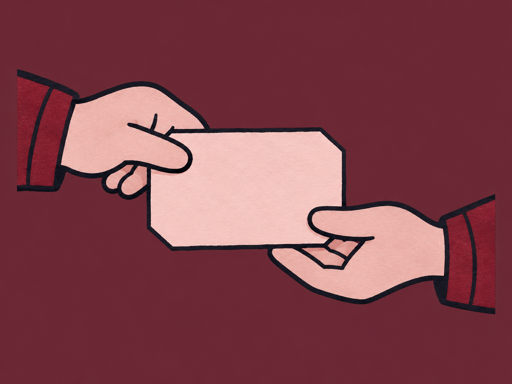
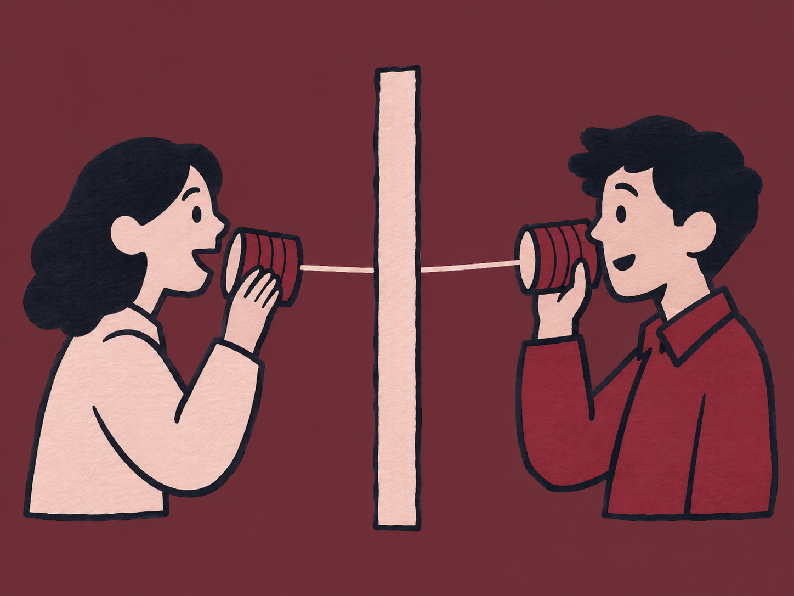
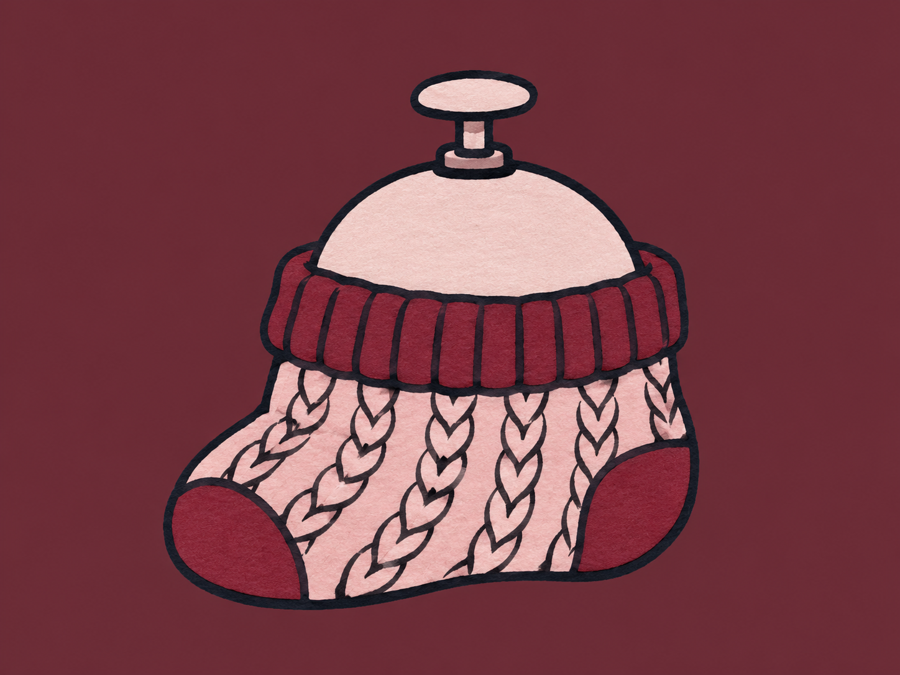
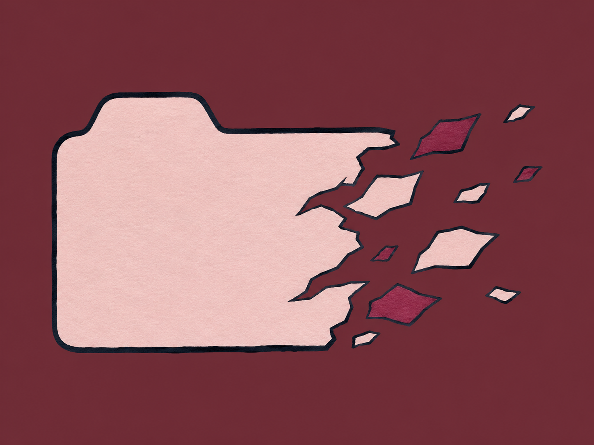

Browser encryption
Your browser will encrypt messages. The short room code can be guessed, so keep sensitive conversations elsewhere.

One room code. Two people. Nobody has to “circle back” to a chat from last semester.
Open chat (opens in a new tab)Room ticket Specimen
Example code
K7P-92X
Admit two Keep the code private
WhatsDown is a college parody of WhatsApp. Two people share a room code and meet in a browser tab. No accounts, no profile pictures, and no need to decide whether that photo from 2019 still looks like you.
Open the chat and create a room. You’ll get a short code like K7P-92X.

Give the code to the person you want to talk to. The group chat can sit this one out.

Join with the same code in two tabs to try it on one computer. The two-device demo adds a manual connection exchange on the same Wi-Fi.


Here’s what to expect when chat is ready.
Your browser will encrypt messages. The short room code can be guessed, so keep sensitive conversations elsewhere.

Closing or reloading will clear your tab’s chat. Your peer can still have their copy or take a screenshot.

No. A room code is all you need.
Once chat is ready, open it in two tabs in the same browser profile at the same site address. Create a code in one tab and join with it in the other.
Use the same Wi-Fi and enter the same room code on both devices. Copy the host’s connection offer to the guest, then copy the guest’s answer back. Some Wi-Fi networks block direct connections between devices.
No. Each tab keeps its chat in memory. Closing or reloading it clears the transcript for that tab.